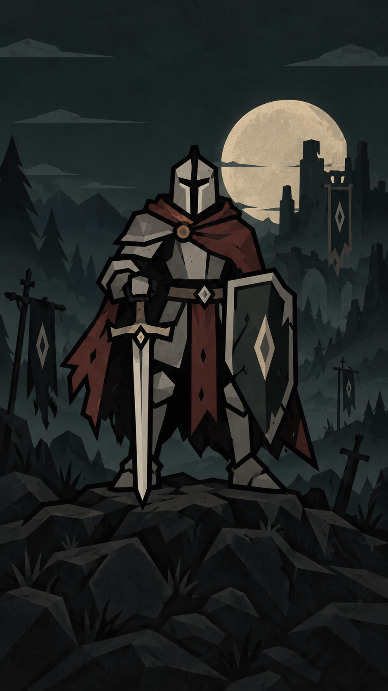

Hollow Vigil UI style guide
Version 3.2 · Pickard / Moonlit iron · September 16, 2026
Start with the theme
Read UI_THEME.md before creating or changing UI. It is the primary specification for palette, materials, type, borders, spacing, row actions, scrolling and review. This guide adds screen recipes and reference interpretation. Both describe one style, grounded in the dark Pickard image on the main menu.

The image's charcoal-green night, angular iron, muted cloak red, parchment moon, weathered surfaces and strong silhouettes define the UI. The historical bright Campaign and Settings buttons do not define the palette. The opening image is the largest source of truth for every future screen.
Version 3 supersedes Version 2's parchment-first backgrounds, yellow primary buttons and pastel panel defaults. Keep the useful existing card hierarchy, compact spacing, 1-unit black button borders, 1-unit panel/divider borders, 4-unit corners and mobile input behavior. Use dark reading surfaces and warm light text as defined in the theme. The shared runtime now applies these roles across menus and gameplay UI.
Reference roles
| Reference | Authority |
|---|---|
| Pickard menu background | Primary mood, palette, material, illustration and composition reference |
| Original Pickard reference | Character identity: closed angular helmet, armor, cloak, sword and diamond shield |
| Waves reference | Information hierarchy, compact cards, native portraits and spacing; historical colors and mixed border weights are superseded |
| Current shared UI code | Existing reusable structure, behavior and sizes; old color literals do not override Version 3 |
{kind=link}
{kind=link}

Shared implementation
Use scripts/ui/shared/interface.gd for primitives and semantic roles. Extend it
and the reusable components before creating local variants. Existing helpers such
as info_card, stat, rule, action_row, number_row, button, style_entry
and keyboard_scroll preserve structure while their semantic presentation evolves.
The theme's fixed action roles are implemented in that owner: iron for neutral
actions, steel for navigation, violet for editing and bronze for building and
recovery. Their light companions emphasize commitments; cloak red marks danger.
The colors coexist within menus, with no player color selector. Use the shared
role helpers and UI.button_surface() so every button retains its 1-unit rim.
Keep text separate from surface tint. Shared world ink/paper/gold constants also serve artwork, so a UI restyle must not globally recolor terrain or currency. Update relevant shared consumers and all button/field/popup states together when implementing dark roles. Keep model values, transactions, save rules and simulation outside presentation code.
Screen recipes
Main menu and illustrated title compositions
The image fills the viewport with proportional centered cover scaling. Keep live text above the art: the PICKARD serif wordmark, short THE KNIGHT subtitle and spare diamond ornament occupy the dark sky. Reserve the middle for the full knight, including helmet, sword, shield and boots. Actions sit below him over quiet ground.
Current title size responds from 32 to 52; current actions are 56 high, up to 320 wide, with a 14-unit vertical gap. Preserve their layout during future styling. Campaign uses aged metal and Settings uses steel as defined by the theme. The live controls respect safe areas and stay reachable through scrolling at short portrait heights. Artwork never owns input and must not bake text or buttons into its pixels.
Reuse welcome_menu.gd and stateless welcome_art.gd. Keep the original character
reference unchanged. Asset provenance is in assets/ui/PICKARD_ART.md. Other
screens share this dark visual language through their backgrounds, surfaces and
accents; they do not require a full-screen duplicate of the hero.
Full pages, settings and forms
Use the existing unified_menu.gd / save_slots_panel.gd shell. Back and title
stay above the scroll area; progression actions stay below. Use 11-unit safe-area
insets and 11-unit separation between these major regions. Keep action order and
current navigation semantics. Do not add feature controls to fill unused space.
For descriptive setting/option rows, put labels and explanations left and values or action controls right, with a black 1-unit divider below each row. Group multiple controls at the right and reflow them without reducing 48-unit targets. Fields remain directly editable; toggles show On/Off. Use the shared form and numeric rows and preserve a passive area from which to swipe.
Settings, Sound, Account, Bug report, Change log, My builds, Community, Save build and Backups share this structure. Keep form errors visible after fixed-footer actions, and preserve first/last-item access when a page rebuilds. Keep Save privately before Share to Community, and keep publication an explicit action.
Cards and saved games
A general card contains a title/status row, optional divider, bold values above labels, native identity artwork and relevant actions. Use 12 padding, 8 between cells and 12 between sections. Native portraits remain proportional. Do not invent empty cells or decorative pictures just to copy a reference layout.
saved_game_card.gd separates save name and mode into adjacent cells with an
8-unit gap, allowing the name to wrap while the mode stays content-sized. Preserve
slot state, progress values and action order. The previous blue-gray parchment
page background is an existing color assignment, not the new dark-theme target.
Choice lists and pickers
Use UI.action_row() and illustrated_picker.gd. Optional artwork and wrapping
identity stay left; Open or Select stays right, centered vertically. Keep a
consistent action column wide enough for Selected. Draw the divider once below
each row, including disabled/selected rows. Never turn the description into a
full-row tap target that makes scrolling select items.
The picker has a fixed title, Close at the right and a header divider above its scrolling choices. Fit it inside the owning safe viewport with 11-unit clearance, up to 480 wide and 560 high. The existing direct-choice save-slot variant sizes to content and keeps its full-width choices. Reveal the selected item on opening; restore focus on dismissal. Closing or dragging must not select accidentally.
Rules and numeric editing
Preserve category → item → full-page editor navigation, illustrated identity, current tier/branch controls and fixed draft actions. Use the shared numeric row: wrapping description left, centered 112×48 minimum input right, no stepper arrows, 72 minimum row height and the same divider. Keep defaults and units meaningful.
Default and Added sections retain explicit labels. Group one added rule's heading, related fields and disable control in one card. As those screens adopt the dark theme, use restrained semantic markers instead of the older large green/purple fills. Preserve independent tier/branch state and current editable-field limits. Retired capability tabs and equipment editing are not authorized by their mention in historical docs. Back/discard handling must preserve the existing draft model.
Waves and comparisons
wave_summary.gd composes a wave title/status, divider, four stat cells, enemy
roster and actions. Use four columns at 400 available grid units or more, two
below, and additional reflow if needed. Values are bold above their labels.
Roster rows keep portrait and name left, count/state at the right. Editable
quantities remain separate actions; passive content scrolls.
Keep wave timing, counts, health, currency and costs supplied by the model. Balancing details and editing are separate actions. Comparisons explicitly label Current and Next, use columns when space allows, and stack at compact widths. No color alone may communicate a purchase consequence.
Campaign map and battlefield
The map has fixed Back/title navigation above six edge-to-edge illustrated biome sections, separated by one black 1-unit line. Preserve chapter scenery, trails, numbered destinations, unlock/completion states and at least 48-unit level targets. Keep text clear of full artwork bounds. World illustrations follow the art guide; map controls use the theme's common dark surfaces and readable text.
The battlefield keeps its compact top toolbar and three passive information cards below it: numbered level identity, currency and wave count. Keep those cards in one row, wrapping text as needed, while gestures pass through to the world. Reserve camera space for that row. Terrain fills the remaining viewport without a new outer panel or permanent footer covering play.
The build strip stays bottom-aligned with horizontally scrollable icon squares at least 48×48, 8-unit gaps and bottom safe-area clearance. Preserve build-choice memory, direct tower management and the actual current placement behavior. Do not change tower art or level indicator art as an incidental UI color change.
Tower panels and confirmation
Preserve the current compact bottom tower-management composition, existing action availability and identity/level layout. The management card and deeper inspection pages differ: do not add a Close to the compact card merely because a detail page has one. Keep existing outside-tap, Back and placement-drag dismissal behavior; ordinary contextual management leaves the battlefield undimmed.
Detail/upgrade views show identity, current state, relevant statistics, exact cost or consequence, then actions. Comparisons retain Current/Next labels. Preserve existing upgrade arming, specialization and model-owned purchase validation.
A blocking confirmation is content-sized and centered inside the safe area, with consequences above confirm/Cancel. The existing helper normally uses up to 380 width and 16 padding; its long details scroll while actions stay reachable. Only the top modal receives input, with a single scrim where required. Escape/Back cancels or closes; a backdrop tap must never confirm or reach gameplay.
Feedback, input and motion
Use short, actionable feedback near its task. Empty states explain what is empty; locked states explain the condition; errors offer the actual recovery action. Keep text legible against dark surfaces without adding warning-color paragraphs. Preserve the existing earnings badge motion (36-unit rise over 0.95 seconds).
No hover feedback or tooltip. Keyboard navigation stays available without adding focus rings. Selected states use explicit text or a marker; disabled controls remain legible. Preserve tap cancellation on swipes and the shared scroll owner's handling of rebuilt controls. Text entry and slider gestures retain their ownership. Panel transitions stay restrained, around 180 ms; do not add bounce or pulsing.
Review and maintenance
Use the checklist and test-owner mapping in UI_THEME.md. Check rendered upright 360×640, 390×844 and 540×960 layouts, long labels, large values, selected/disabled/modal states and safe-area behavior. Run the focused tests in tests/README.md. Desktop simulation does not establish physical iOS/Android acceptance.
Check the actual rendered dark palette in every state, including the fixed
iron, steel, violet and bronze actions and their emphasized variants. Use moonlit_theme_runner.gd for the complete menu inventory and
contrast/border checks, plus the relevant interaction runners.
Keep this guide, UI_THEME.md, ART_DIRECTION.md and AGENTS.md aligned. After
editing this guide, run ./tools/render_ui_style_guide.ps1 in PowerShell 7 to
regenerate its HTML companion. The theme owns shared visual rules; add screen
recipes here without creating a second competing palette.